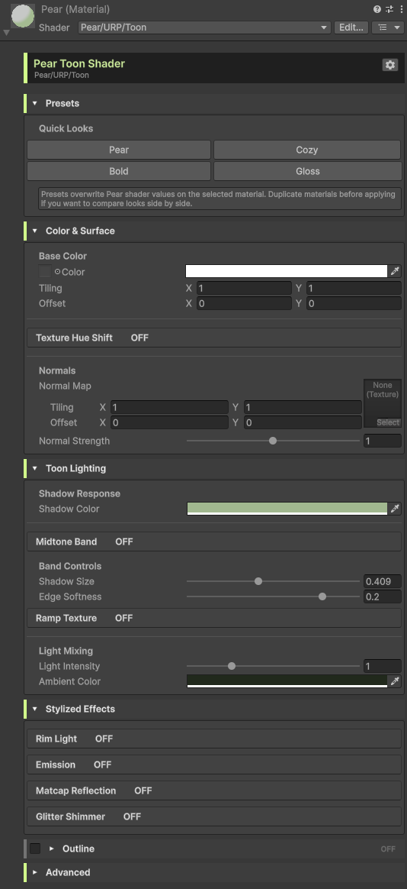

URP Toon Lighting
Custom ShaderLab/HLSL lighting with shadow color, light threshold, softness, and direct light intensity controls.
Unity URP Tech Art Project
Pear is a Unity URP shader toolkit built as a technical art portfolio project. It combines hand-written ShaderLab/HLSL, a custom material inspector, toon band controls, ramp lighting, rim light, emission, and matcap effects in a compact, polished package.

Pear is designed like a small production shader tool: readable shader code, clean editor tooling, grouped controls, feature toggles, and a presentation layer that makes the project portfolio-worthy instead of just functional.
Current Features
Custom ShaderLab/HLSL lighting with shadow color, light threshold, softness, and direct light intensity controls.
Optional midtone band support for shadow → midtone → lit shading, giving artists more control than a basic two-band shader.
Horizontal ramp textures can define custom lighting bands for more complex stylized looks without needing endless sliders.
Fresnel-style rim lighting adds silhouette highlights for anime, toy-like, or neon-inspired materials.
Emission color, mask, intensity, and pulse controls support glowing accents and future stylized presets.
View-based matcap sampling creates fake glossy, pearlescent, and plastic-like highlights without full PBR complexity.
Custom Inspector
Pear includes a custom Unity ShaderGUI with grouped foldouts, feature toggles, a customizable accent color, and clearer controls for each stylized effect.


Material Comparison
Pear is intended to support multiple stylized looks inside one cohesive shader toolkit. The comparison view helps show how different settings change the material response while keeping the workflow readable and artist-friendly.
Roadmap
Base URP lighting, toon bands, midtone, ramp, rim, emission, matcap, and custom inspector.
Inverted hull outline pass with artist controls for width, color, and depth offset.
Preset system, polished demo scene, GitHub documentation, and final portfolio writeup.